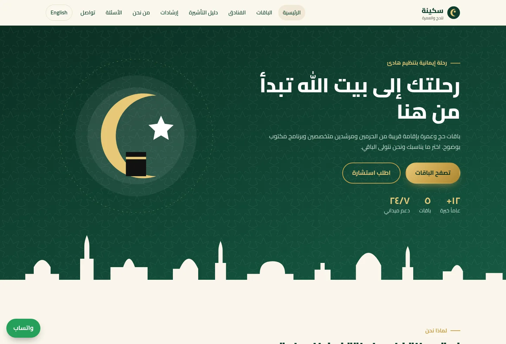
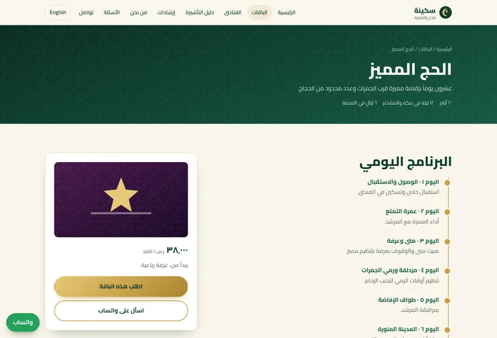
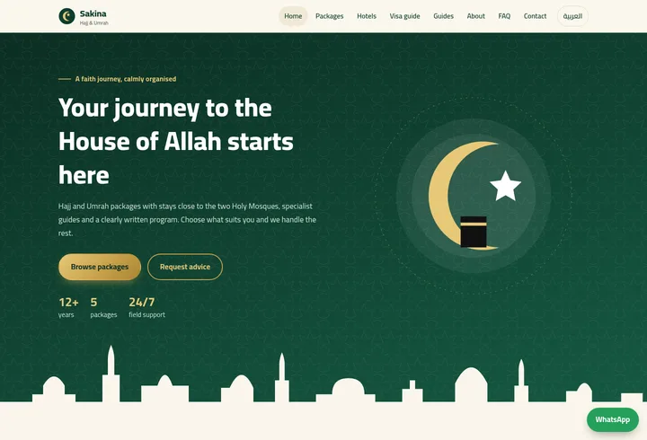
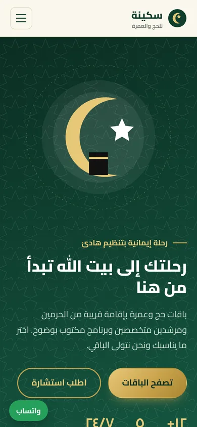

PORTFOLIO DEMO / BUILT / LIVE DEMO
Sakina
A Hajj and Umrah travel site that explains each package, hotel and visa step before a pilgrim asks. Arabic and English.

ACTUAL BUILDSakina · Home page. Sample content.
The problem
Pilgrims comparing Hajj and Umrah offers usually get a PDF or a WhatsApp voice note: dates, hotel distance, what the price includes and what it does not are scattered, and every question starts a new conversation.
What was built
A static website in Arabic (right to left) and English with 13 pages per language: home, a package list that filters between Hajj and Umrah, five package pages with a day-by-day program, what is included and not included, a room price table and a request card, a hotel list that filters between Makkah and Madinah, a visa guide, general guides, about, FAQ and a contact form with validation. The artwork is original SVG, the font is self-hosted and the site makes no external requests. It works on a phone, and a language switch sits in the navigation.
Why it matters
A traveler can compare packages, read the program and see what is covered without waiting for a reply, and the agency receives a request that already names the package. This is a design for that flow, not a measured result from a real agency.
Limits
All prices, hotel names, reviews and team members are sample data and the footer says so. The contact form stores nothing outside the visitor's browser, and the WhatsApp number is a placeholder. The religious and visa content is general and would need review before real use.
Inside the build
Open any preview to see the full capture. Captures show demonstration content, not evidence of client use.


